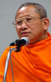
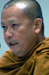
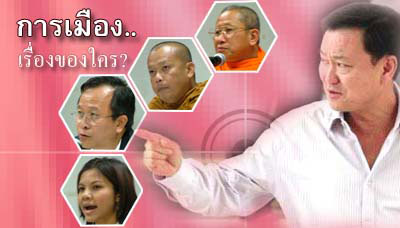

|
๔ วาทะ พระต้องเทศน์การเมือง กฤนกรรณ สุวรรณกาญจน์  พระศรีปริยัติโมลี สำหรับ ประเด็นนี้ คงต้องทำความเข้าใจกันก่อนว่า สังคมไทย กำลังมีความเข้าใจผิดอย่างมาก ทุก ๆ เหตุการณ์ที่เกิดขึ้นในสังคม เกี่ยวข้องกับวัดโดยตรง หลายเรื่องต้องเป็นกิจของสงฆ์ แต่เมื่อนานไป พระ ไม่ได้จัดการเอง จึงเกิดความเข้าใจว่า เรื่องเหล่านี้ไม่ใช่กิจของสงฆ์หรือ พระ ไม่ควรจะทำ เมื่อชาวบ้านเอาไปทำจึงกลายเป็นว่าไม่ใช่ธุระของพระ.. เป็นเช่นนี้ เมื่อ พระ ลุกขึ้นมาทำอะไร ที่ไม่เคยทำ จึงกลายเป็นว่า ไม่ใช่กิจของสงฆ์ พระกับการเมืองเหมือนกัน..มันขึ้นอยู่กับว่า เรา เข้าใจ การเมือง ว่าอย่างไร หากการเมือง เป็นเพียงเรื่องของการเลือกตั้ง การเป็น ส.ส. หรือ ตำแหน่งรัฐมนตรี หรือเป็นเรื่องเฉพาะบุคคลที่เป็นข้าราชการการเมือง เท่านั้น หากเราเข้าใจ การเมืองได้เท่านี้ ก็คงต้องทำความเข้าใจกันใหม่ รัฐธรรมนูญ ๒๕๔๐ เรา เรียกร้อง องค์กรตรวจสอบอิสระ ขึ้นมา เรามี กกต. ศาลรัฐธรรมนูญ ปปง. ปปช. สร้างดุลแห่งการตรวจสอบการใช้ อำนาจ อาตมา บอกว่าไม่ได้หรอก การเมืองต้องเป็นเรื่องของสงฆ์ด้วย ถึงจะทำให้เกิดความสมดุล การปฎิรูปไม่อาจจะทำได้ด้วยอำนาจทางโลกเพียงเท่านั้น เรา ไม่อาจจะใช้กฏหมายทางสังคม เพียงเท่านั้น ในการปฎิรูป หาก เรา ไม่มีการคิด เรื่องฐานทางศีลธรรม ประกอบเข้าไปด้วยกัน เรา ไม่อาจสร้างระบบการเมืองที่ดีขึ้นมาได้ ที่ผ่านมา การปฏิรูปรัฐธรรมนูญเพื่อดุลการใช้อำนาจของ นักการเมือง พิสูจน์ให้เห็นแล้วว่า ผิดพลาด ที่ไม่มีการนำเอาระบบศีลธรรมเข้าไป ควบคุม เรา ต้องการระบบการเมือง น้อยพรรค แต่ เรา กลับได้ พรรคการเมืองที่แข็ง แต่ไม่ฟังเสียงใคร จนเดี๋ยวใครจะพูดถึงท่านก็ไม่ได้ มีอำนาจมาก มีเงินมาก เป็นที่สุดของ ความถูกต้อง เป็นผลจากการ ปฎิรูปรัฐธรรมนูญ ๒๕๔๐ เพราะ เรา ขาดวิธีคิดในการวางฐานทางศีลธรรมในวงการการเมือง ฉะนั้น พระ นั่นเอง คือ ผู้วาง ศีลธรรมทางการเมือง.. พระ ถึงต้องเทศน์ การเมือง คือ การนำ ศีลธรรม เข้าสู่ระบบการเมือง มุ่งให้คนมองเห็นถึงความเท่าเทียม ปูและสร้างเกราะทางศีลธรรม ไม่ใช่การสร้างกฎเกณฑ์จากภายนอกแต่ต้องวางระบบออกมาจากภายใน ไม่งั้น บ้านเมืองจะหายนะ บ้านเมืองหายนะ พระ จะไปอยู่ไหน บ้านเรา ไม่เคยพูดถึง เรื่องศีลธรรมทางการเมืองแต่กลับผลัก พระ ออกไป ไม่ต้องเข้ามาเกี่ยวข้อง ตั้งองค์กรทางโลก ทำหน้าที่ตรวจสอบ ถามว่า ทั่วถึงหรือ ต้องวางฐาน การตรวจสอบ จากภายใน วันนี้ เห็นที พระ จะเข้ากลุ่มขาประจำ พระ จะพูดเรื่องราวใดที่ตรงไปตรงมาหรือ แตะนโยบายรัฐบ้างไม่ได้หรือ กลายเป็นว่าพระไม่ควรยุ่งการเมือง สังคม ประกอบไปด้วยกลุ่มคนหลากหลายซึ่งล้วนแล้วแต่ต้องเกื้อกูล กันและกัน หากจะมองว่า พระ ไม่ควรจะยุ่งเกี่ยวทางการเมืองหรือยุ่งเกี่ยวกับปัญหาสังคม อาตมาคิดว่า ไม่เป็นการถูกต้องนัก พระ ต้องมีความตื่นตัว ทางการเมือง สร้างศีลธรรม กับระบบการเมือง.. ธรรม เป็น ยา ครอบจักรวาลที่จะต้องมีอยู่ในทุกอณูของ ระบบสังคม ซึ่ง พระ คือ ผู้ทำหน้าที่ในการรักษาและดำรงสถานะทางสถาบัน ชาติ ศาสนา พระมหากษัตริย์ เรา วันนี้ มีความเข้าใจคลาดเคลื่อนไป สร้างพระ แสดง พุทธาภินิหาร สร้างไอ้ขิก ทำเสน่ห์ยาแฝด ประเด็นนี้ สังคมกลับไม่ตรวจสอบ แต่ พระ ซึ่งพยายามช่วยรักษาชาติบ้านเมือง เรา กลับสงสัยว่า กิจของสงฆ์ หรือเปล่า ถึงคราวแล้วที่สังคมจะต้องตื่นเสียที
 พระกิตติศักดิ์
กิตฺติโสภโณ ๑ มิถุนายน ๒๕๔๗ อาตมาไปตั้งข้อสังเกตุที่คณะรัฐศาสตร์ จุฬา เรื่อง การขายหวยหุ้น สโมสร ลิเวอร์พูล จะเป็นการทำให้ประชาชนขาด หิริโอตัปปะ หรือไม่ ..ปรากฏว่าวันรุ่งขึ้นที่วัด สวนเมตตาธรรม อ.ฝาง จ.เชียงใหม่ เจ้าหน้าที่สำนักงานวัฒนธรรม จังหวัดเชียงใหม่พร้อมกับผู้ใหญ่บ้าน เจ้าหน้าที่ติดตามจำนวนหนึ่ง ไปหาอาตมาและบอกว่า..ทำไมต้องไป วิพากษ์วิจารณ์ รัฐบาล ทั้งที่ เป็นการแสดงออกทางความคิด เป็นเรื่องปกติในสังคมประชาธิปไตย ไม่ใช่หรือ เหตุการณ์ที่เกิดขึ้น หมายแสดง ให้เห็นอะไร..อาตมา คิดว่า สังคมกำลังชื่นชมกับผู้นำที่ เห็นผิด คิดผิด สำคัญตัวผิด เรียกว่า วิปลาสไปเสียแล้ว ลองมาดูว่า พฤติกรรม ของรัฐบาลกับ ระบบทศพิธราชธรรม เรา กำลังมีผู้นำอย่างไร.. ทาน รัฐบาล อนุมัติสั่งจ่าย ทาน ไปในลักษณะใด ศีล รัฐบาล สร้างระบบศีลธรรม ฟุ้งเฟ้อ ในสังคม หรือไม่ บริจาค รัฐบาลนี้หว่านเงินบริจาคอย่างหวังผล อาชาวะ หรือความซื่อตรง ไร้มารยา รัฐบาลนี้โปร่งใสเพียงใด มัทธวะ ความอ่อนโยน มีอัธยาศรัย ไม่เย่อหยิ่ง หยาบกระด้าง รัฐบาลนี้ กลับให้ภาพตรงข้ามกับประชาชน ตบะ หรือความทรงเดช ทะลายกิเลสภายในตน รัฐบาล ถือได้ว่า เป็นรัฐทุนซึ่งสร้าง กิเลสตัณหา ให้พอกพูน อโกธะ ความไม่โกรธ ไม่เกรี้ยวกราด ลุแก่อำนาจ ข้อนี้คงไม่ต้องพูดถึง อวิหิงสา ความไม่เบียดเบียน บีบคั้นกดขี่ รัฐบาลนี้กลับมีรูปแบบการเอาเปรียบโดยการใช้ อามิสเข้าล่อ ขันติ รัฐบาลนี้ ไม่มีความอดทนต่อการยั่วหยัน อวิโรธนะ ความไม่คลาดธรรม เอนเอียงแก่พวกพ้องแต่รัฐบาลกลับสร้างการคอร์รัปชั่นเชิงนโยบาย สร้าประโยชน์แก่พวกพ้องด้วยวิธีการที่แนบเนียน อาตมาอยากจะชี้ให้เห็น คือว่า ทำไม ครั้งที่ท่านเป็น นายกใหม่ ๆ แล้วมี พระ ออกมาแสดงความเห็นด้วยกับท่านที่ได้รับ ตำแหน่งนายกรัฐมนตรี ทำไมท่านไม่จับสึกหรือตรวจสอบว่า เป็นการยุ่งเกี่ยวกับการเมือง หรือเปล่าหรือกรณี เกจิอาจารย์ชื่อดัง แนะนำให้ยุบชาติพัฒนารวมกับไทยรักไทย ทำไม ท่าน ไม่แนะนำให้ ลาสิกขา แสดงว่า ระบบตรรกะของ ท่าน กำลังผิดพลาด และมุ่งให้ร้ายความเห็นอื่น ๆ ที่ไม่เห็นด้วยกับตนอยู่เสมอ สมควรหรือ ที่ท่านยังเป็นผู้ซึ่งนั่งทำงานอยู่ในรัฐสภา อันเป็นสถานที่ของ สัตตบุรุษ อาตมา ในฐานะตัวแทนของกลุ่มเสขิยธรรม เห็นว่า หากสังคมยังเป็นอยู่อย่างนี้ กลุ่มเสขิยธรรม มีความจำเป็นต้องเข้าไปยุ่งเกี่ยวกับการเมืองเพื่อทำหน้าที่ในการสร้างฐานแห่งศีลธรรมให้แก่ผู้นำ ศาสนิกชน ผู้มีศรัทธาปสาทะในพุทธศาสนาจำเป็นต้องร่วมกันแสดงพลัง ให้เห็นว่าพลังของประชาชน ยิ่งใหญ่เพียงใดใน การเลือกตั้ง คราวต่อไป
น.พ.นิรันดร์
พิทักษ์วัชระ กรณีการห้ามพระวิจารณ์การเมือง เป็นการบ่งชื้ถึงสัญญาณอันตรายในสังคมไทย.. ประการที่หนึ่ง สังคมได้ตระหนักทราบว่า เรา กำลังอยู่ในยุคสมัยของบุคคลที่มี อำนาจทางการเมืองสูงสุด ล่าสุดสั่งปลด ปลัดกระทรวงสาธารณะสุข ภายใน ๒๔ ชั่วโมง อำนาจเบ็ดเสร็จ ขนาดนี้ กำลังครอบงำสังคมและระบบราชการ ระบบสังคม ได้รับการแทรกแซง ด้วยระบบอำนาจ ล่าสุด มีกระแสว่า จะสั่งปลด ผู้ว่าการตรวจเงินแผ่นดิน หากไม่เชื่อฟัง ต้องเอาออก..ทำร้าย ประชาชน เอ็นจีโอ นักวิชาการและวันนี้เป็นพระสงฆ์ ภายใต้คำว่า ขาประจำ ประการที่สอง ติดสินบนและซื้อตรง อาศัยนโยบายประชานิยม การซื้อตรง ทำให้คน คิดว่าได้ประโยชน์ ไม่ถูกเอาเปรียบ..หรือขณะนี้ อภิมหา นโยบายประชานิยม นโยบาย เอสเอ็มแอล คือ แจกเงินโดยตรง ผมคิดว่า ประชาชนไม่ได้ต้องการเงินทอง หากสิ่งที่ต้องการ คือ การจัดการฐานทรัพยากรด้วยตนเอง การจัดการที่ดินโดยตัวของชุมชนเอง สิ่งเหล่านี้ ตกอยู่ภายใต้เงื้อมงำของ กลุ่มธุรกิจการค้าและผลักประชาชนให้เป็นเพียงนักบริโภค ประการที่สาม คือ สังคมกำลังเผชิญหน้ากับวิธีการที่แยบยลใน การจัดการผลประโยชน์ ภายในกลุ่ม นักธุรกิจด้วยกัน เอฟทีเอ ไทย-จีน ทำลาย เกษตรกร โคนม ถึง ๑๕๐,๐๐๐ ครอบครัว ทำลายเกษตรกรหอม-กระเทียม เป็นจำนวนมาก สิ่งที่เราได้รับ จากจีน คือ การปรับมุมดาวเทียม ดาวเทียมจีน-ไทย จี-สตาร์ สิ่งที่เราได้รับ คือ มูลค่าหุ้นในเครือข่ายธุรกิจของ นายก ที่มีกว่า ๕ บริษัท เพิ่มจำนวนขึ้น ถึง ๒๐๐,๐๐๐ ล้านบาท สิ่งที่เราได้รับ คือ อุตสาหกรรมยานยนตร์ โตโยต้า ของญี่ปุ่นซึ่งมีหุ้นส่วนเป็นนักการเมือง สิ่งที่เราได้รับ คือ การนำเข้าพืช จีเอ็มโอ ไก่ พืช ถั่วเหลือง มะละกอ เห็นอย่างชัดเจนว่า นโยบายของรัฐบาลนี้ คือ เอื้อพวกพ้อง ก่ออิทธิพล ซื้อตรงประชาชน ทำลายและกดดันฝ่ายตรงกันข้าม สังคมไทยต้องตระหนัก คำว่า ขาประจำ กำลังลุกลามไปถึงกลุ่มพระภิกษุสงฆ์ ประการที่สาม คือ เมื่อสังคมกำลังมืดบอด บุคคลที่เป็นที่พึ่งของสังคม คือ พระ แต่รัฐบาลนี้ก็ใช้อำนาจทางโลกบีบคั้น ตั้งแต่ การกำหนด พรบ.สงฆ์ ธรณีสงฆ์จนวันนี้ ห้ามพระมาเทศน์เรื่องการเมือง สังคมวันนี้ กำลังถูกระบบการใช้อำนาจเข้าครอบครอง ลุกลามเข้าสู่จุดแห่งการทำลาย ระบบศีลธรรม-จริยธรรม โกงเงิน โกงนโยบาย โกงกฎหมายและออกพระราชกำหนด ต่าง ๆ เพื่อเอื้อประโยชน์แก่ เครือข่ายธุรกิจ และเป็นรัฐบาลแรกที่เปิด เขตการค้า โดยไม่ต้องผ่านระบบรัฐสภา สร้างวิธีโกงผ่านกลไกทางกฏหมาย ตั้งแต่เรื่องข้อสอบรั่วถึงใช้หวยมอมเมาประชาชน โดยไม่ได้คิดว่าเป็นเรื่องการทำลายเชิงศีลธรรม คุณธรรม ระบบอำนาจนิยม ขณะนี้ เป็นเผด็จการทางด้านการสื่อสาร ใช้การตลาดมอมเมา ตีบตัน อับจนและปิดหูปิดตาประชาชน ทำลายความชอบธรรม การห้ามพระเทศน์การเมืองก็เพราะต้องการมอมเมาประชาชน เรา คงยอมรับไม่ได้ว่า สังคมไทย คือ คนเพียงคนเดียว การเมือง คือ การจัดสรรประโยชน์แก่คนทุกระดับ การเมืองไม่ใช่ การผูกขาด พระสงฆ์ คือ ผู้สืบทอดแนวทางทางศาสนา ทำหน้าที่เปิดตาสังคม เข้าสู่วิถีแห่งปัญญา พระ คือ ผู้ทำหน้าที่ นี้ เห็นได้ว่า สมเด็จพระพุฒาจารย์ โต เคยถือตะกียงเข้าไปในวัง สะท้องปริศนาธรรมถึง สังคม ขณะนั้น เป็นสังคมที่กำลังมืดบอดทางปัญญา สังคมไทย กำลังเข้าสู่ ยุคมืด ..อีกครั้ง สังคมไทยต้องตระหนัก เรื่องนี้สังคมไทยเป็นสังคมนิติรัฐ แต่กฏหมายเลือกปฏิบัติและวันนี้กฏหมายถูกสร้างโดยการใช้หลัการทุจริตเชิงนโยบาย ดังนั้สิ่งที่ สังคมต้องการมากขณะนี้คือ นิติธรรมที่มีที่มาจาก ธรรม ซึ่งเป็นหน้าที่ของพระ
สุภิญญา กลางณรงค์
สังคมไทยกำลังเข้าสู่ยุคแห่งการกำจัด การแสดงออกทางความคิดเห็นที่แตกต่างเป็นสื่อมวลชนก็โดนไล่ออก เป็นนักวิชาการก็โดนทำลายความชอบธรรม เป็นเอ็นจโอก็โดนฟ้องทำลายภาพลักษณ์ สะท้อนให้เห็นว่า เครือข่ายทุนกำลังมีบทบาทชี้นำสังคมมาก พระ ในฐานะพลเมืองของประเทศมีฐานะภายใต้ รัฐธรรมนูญแห่งราชอาณาจักรไทย มีสิทธิทางด้านความคิด และการแสดงออกของความเห็น เขียน พูด โดยที่มีสังคมภาพรวม เป็นกลุ่มตรวจสอบการแสดงออกทางความคิดของแต่ละบุคคล การเซ็นเซอร์ สะท้อนวิธีการโบราณ ล้าหลังอย่างไม่น่าจะเกิด รัฐบาล ฟ้อง ปลด ถอน ทำลายความน่าเชื่อถือ จนวันนี้ก้าวเข้าถึงสถาบันศาสนา สร้างบรรยากาศแห่งความกลัว ซึ่งจะฝังรากลึก สู่ระบบความคิด-จิตใจของสังคมและประชาชน รัฐบาลทำให้สังคมไทย สวนทางกับระบบศาสนา เน้นการบริโภค ติดอยู่ในบ่วงทุน ประชาชนเป็นเพียงผู้อาศัยที่ต้องกระทำตามความต้องการเจ้าของบ้าน กลุ่มมุสลิมทางภาคใต้ รักษาวิถีการบริโภคเอาไว้เหนียวแน่น กลุ่มทุน ไม่ว่าจะเป็นเหล้า บุหรี่หรือน้ำดำขายไม่ได้ในประเทศมุสลิม วิถีทุน จึงสร้างมาตรการทั้งทางตรง-ทางอ้อม สลายความเข้มแข็งของชุมชน สร้างวิถี ทุน ให้เป็นวิถีหลัก เพียงวิถีเดียว.. รัฐบาลนี้พยายามควบคุมสื่อสารมวลชน ย่อยสลายการรวมตัว สร้างความคิด ทุน เป็นกรอบความคิดหลักและมีรัฐบาลชักใยอยู่เบื้องหลัง เหตุการณ์เหล่านี้เป็นเรื่องราวที่ใหญ่และลึก ขณะทุนเติบโตและเปิดเสรี แต่สถานภาพทางการเมืองกลับสร้างระบบเผด็จการ มากขึ้นกว่าเดิม ทั้งที่ เรา ต้องการระบบการเมืองที่เปิดกว้างและการตรวจสอบที่เข้มแข็ง เรา เปิดประเทศสู่ตลาดโลกมากเท่าไร เรา ยิ่งต้องการความคิดเห็นจากประชาชน มากยิ่งขึ้น ประชาชน
จะต้องไม่ยืนดูเฉย ๆ โดยไม่ทำอะไรเลย..  การเซ็นเซอร์
พระ
ที่มา/คัดจาก: http://skyd.org/html/life-social/4word_Politic-Monk.html |
วัดท่าไทร
สำนักงานเจ้าคณะภาค ๑๖
สำนักงานเจ้าคณะจังหวัดสุราษฎร์ธานี
ศูนย์พัฒนาคุณธรรมภาคใต้(สุราษฎร์ธานี)
สำนักงานพระพุทธศาสนาจังหวัดสุราษฎร์ธานี
ศูนย์ประสานงานสมาคมป้องกันภัยจังหวัดสุราษฎร์ธานี